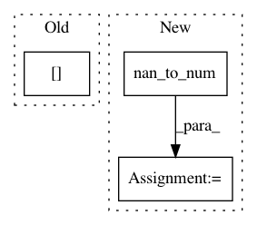

06ac55c2da7b0313e7edbba742ec44e03734565e,utilities/volume_reader.py,VolumePreprocessor,normalise_subject_data_and_save,#VolumePreprocessor#Any#,132
Before Change
new_path=self.dict_normalisation.path_to_save,
new_prefix="Norm")
io.save_img(data_dict[mod], subject.name, [], name_norm_save,
filename_ref=subject.file_path_dict[mod],
flag_orientation=self.do_reorient,
flag_isotropic=self.do_resample)
subject._set_data_path(name_norm_save, mod)
After Change
if self.flags.flag_standardise:
data_dict = subject.read_all_modalities(self.flags.flag_reorient,
self.flags.flag_resample)
data_dict.input = np.nan_to_num(data_dict.input)
mask_array = self.make_mask_array(data_dict.input)
data_dict.input = self.standardisor.normalise_data_array(
data_dict.input, mask_array)
name_norm_save = io.create_new_filename(
subject.name + ".nii.gz",
new_path=self.dict_normalisation.path_to_save,
new_prefix="Norm")
data_nifti_format = np.swapaxes(data_dict.input, 4, 3) // Put
// back the array with the nifti conventions.
io.save_img(data_nifti_format, subject.name, [], name_norm_save,
filename_ref=subject.file_path_list.input.filename_ref,
In pattern: SUPERPATTERN
Frequency: 3
Non-data size: 3
Instances
Project Name: NifTK/NiftyNet
Commit Name: 06ac55c2da7b0313e7edbba742ec44e03734565e
Time: 2017-05-22
Author: wenqi.li@ucl.ac.uk
File Name: utilities/volume_reader.py
Class Name: VolumePreprocessor
Method Name: normalise_subject_data_and_save
Project Name: tyarkoni/pliers
Commit Name: b3cf6fd0c65394a97c2dbcff6dd835de5006e10f
Time: 2016-10-12
Author: tyarkoni@gmail.com
File Name: featurex/extractors/audio.py
Class Name: STFTExtractor
Method Name: _extract
Project Name: elfi-dev/elfi
Commit Name: eb8c188803d258dbcae61764ffe8085db627424b
Time: 2019-11-25
Author: 33959025+hpesonen@users.noreply.github.com
File Name: elfi/examples/daycare.py
Class Name:
Method Name: ss_shannon